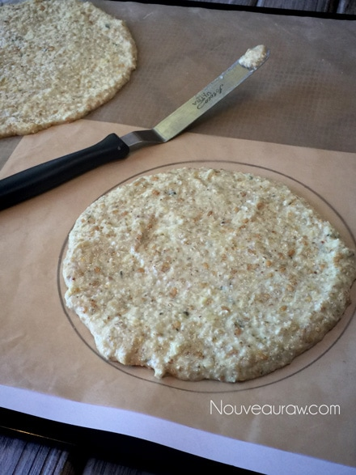
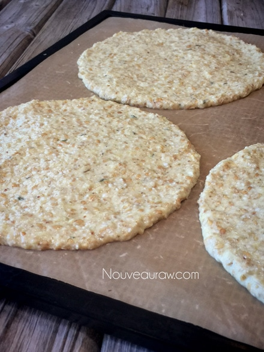
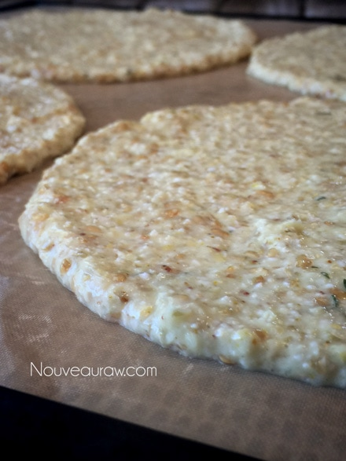

Soft “Buttery” Flatbread
 – raw, vegan, gluten-free, nut-free –
– raw, vegan, gluten-free, nut-free –
You know that saying, “If at first, you don’t succeed, try, try again”? Well, I tried, tried, tried, and then tried again! Yessiree Bob, it took me four tries to nail this recipe. I wasn’t aiming for perfection, but pretty darn close.
This flatbread is somewhere between a flour tortilla and naan bread, as far as texture and flexibility. Flavorwise, it has a basic neutral aftertaste to it, but it can be dressed up or down depending on the spices that you add to the recipe. I used a hint of rosemary and thyme, which is delicious, but if you wanted something even more neutral in flavor, leave those two ingredients out.
INGREDIENTS
Let’s have a small chat about the ingredients that I used and perhaps why. I won’t dive into each one; instead, I will hit the main ones that lend to the beautiful flexible texture and flavor.
Buckwheat… the foundation
First off, I started with sprouted buckwheat as my base. I did this to take the load off of using more nuts. Nuts are lovely, but it’s wise to rotate the ingredients that you use daily. The buckwheat is perfect for a neutral base, which is typically what a bread product is known for.
Flax Seeds… binder
Next up is the flax seeds. Most of you are aware of how flax seeds work, but I will never pass up a chance to share with those of you who are new to this mighty little seed. Flax seeds, touted for their amazing nutrients, are also known as the “holy binder” of raw foods. It gives the flatbread that flexible feature. Flax seeds contain both the soluble and insoluble types and can be very bulk-forming in the colon. This process can be a real blessing for those who suffer from constipation, but it can also hinder movement when you don’t drink enough water with them. You can learn more about them (here).
Psyllium Husks… bread-like texture
Good ole psyllium husks. I had to squeak in a few tablespoons of psyllium to help give the bread a little loft and sponginess. Hmm, is that an odd description? Sponginess? Well, regardless, that is what it does in this recipe. Of course, these breads are not thick, they weren’t meant to be, but they do have a nice loft to them. To learn more about psyllium, please click (here).
TECHNIQUE
There isn’t anything complicated about making these flatbreads, but I will clue you in on a few tips and tricks that I learned along the way. First off, you can make these breads as small or large as you want them. I made two different sizes just to add some variety to life. The larger ones work great for a full-sized meal, and the smaller ones are perfect for mid-day snack sandwich wraps.
Thick and Sticky
Once you have made the dough, you will notice that it might be thick and sticky, this is normal. If it seems too challenging to work with, feel free to add a little water to the batter. I will encourage you to pick up your pace when it comes to spreading these into circular shapes. As time slips by, the flax and psyllium will continue to thicken. I found dipping my off-set spatula in water helped with the stickiness of the dough.
Dry Time and Shaping
The dry time will need to be monitored. I have set guidelines below but check on them periodically to see how they are doing. There is a sweet spot where the dough will be “cooked” through, yet the texture will remain nice and pliable. As you can see in my photo, they are pretty darn close to perfect in shape. Two things took place to achieve this. First of all, I printed off a sheet of paper that had 6 1/2″ circles on it. I then slid it under the non-stick sheet so I could use it as a template, making sure they all remain the same size. Then once the bread is done in the dehydrator, I set a bowl on top of the wrap and trimmed off any unruly edges. You certainly don’t need to do this at all! Personally, I can’t help myself. hehe
Ingredients:
Yields: 14 flatbreads (1/2 cup each)
- 2 cups (340 g) buckwheat, soaked & sprouted
- 1/4 cup (32 g) flax seeds, ground & soaked in 1 cup water
- 1 1/2 cups (255 g) organic corn
- 2/3 cup (125 g) cold-pressed olive oil
- 3 Tbsp (36 g) psyllium husks, powdered
- 2 cloves garlic
- 2 tsp (13 g) Himalayan pink salt
- 1 tsp (4 g) ground cumin
- 1 tsp (1 g) dried rosemary
- 1 tsp (1 g) thyme or 1 Tbsp fresh
Preparation:
Bread dough:
- This amount of dough yields 14 (1/2 cup) 6 1/2″ circular breads.
- The night before, I soaked the buckwheat, flax seeds, and corn in three separate bowls. Soaking the corns helps to soften the kernels.
- You can take the buckwheat to the next nutritional level by sprouting them before continuing with the recipe but be prepared to tack on a few more days to prep.
- When you are ready to use the buckwheat, drain and rinse the tarnation of out of them. It will take about 5 minutes. Make sure that the water runs clear, and you don’t detect any mucilage dripping from the mesh strainer.
- Strain the corn.
- In a food processor, fitted with the “S” blade, combine the buckwheat, psyllium, corn, oil, flax, garlic, salt, cumin, rosemary, and thyme. Process until it reaches a dough-like consistency.
- On non-stick sheets that come with the dehydrator, spread 1/2 cup of batter into a 6 1/2″ circle.
- If you struggle with making perfect circles or question how big 6 1/2″ is… create a template. (shown below).
- Using a black sharpie pen, I took the ring from my Springform pan and traced it onto a piece of paper. You want to use a marker of some sort so you can see it through the non-stick sheet.
- Slide the paper under the non-stick sheet and use this as a template.
- Move the sheet to all 4 corners as you make the wraps.
- Remove the paper when done and save for your next creation!
- Option: sprinkle extra Italian seasoning, flax seeds, or sesame seeds on the surface of the wrap before drying.
- Dehydrate at 145 degrees (F) for 1 hour, then reduce the temp to 115 degrees (F) for a few hours, until they are done enough to turn over onto the mesh sheet and peel off the non-stick sheet.
- Continue to dry for another 3-4+ hours.
- Keep an eye on them and test their flexibility.
- They shouldn’t be tacky when touched and should remain flexible.
- Any leftover wraps should be wrapped individually, slid into a ziplock bag, and stored in the fridge for 5-7 days.
The Institute of Culinary Ingredients™
- There are several reasons as to why I use psyllium in this recipe, click (here) to learn more about it.
- What is Himalayan pink salt, and does it matter? Click (here) to read more about it.
- Learn how to grind your own flax-seeds for ultimate freshness and nutrition. Click (here).
Culinary Explanations:
- Why do I start the dehydrator at 145 degrees (F)? Click (here) to learn the reason behind this.
- When working with fresh ingredients, it is essential to taste test as you build a recipe. Learn why (here).
- Don’t own a dehydrator? Learn how to use your oven (here). I do, however honestly believe that it is a worthwhile investment. Click (here) to learn what I use.



© AmieSue.com